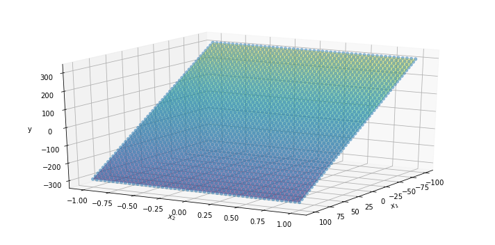
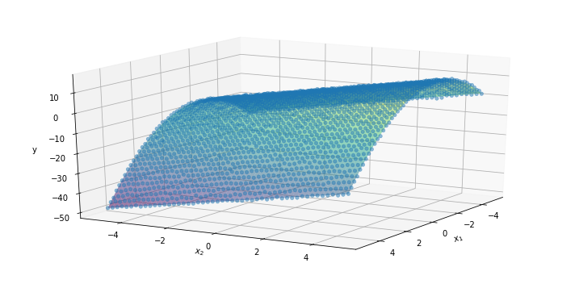
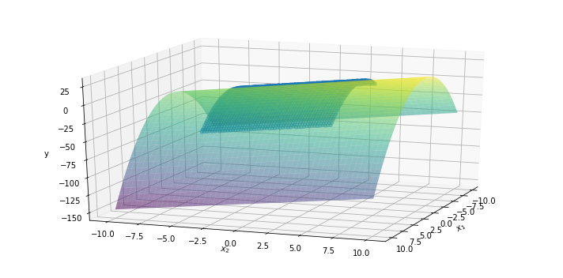
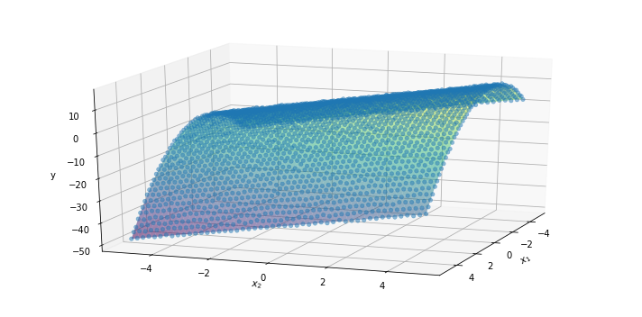

1. Introduction
We have introduced the concept of the linear-regression problem and the structure to solve it in a “machine-learning” fashion in this post, while we have applied the theory to a simple but practical case of linear-behavior identification from a bunch of data that are generated in a synthetic way here and extend the analysis to a multi-linear case where more than one feature (or input) are fed to the model to predict the outcome here.
We have implemented the same process with Sklearn and Tensorflow in the last post.
This post takes care of fundamental aspects of machine learning theory, such as feature scaling, feature augmentation, via techniques such as polynomial features, and hypothesis evaluation. The last step translates into splitting the data set in at least two subsets, namely training and testing. The former is used to find optimal parameters of the model, the latter is adopted to evaluate the real performance of the model when it is fed with data that have never been seen during training.
One major challenge is to collect large enough training set to find out the optimal parameters, but be able to keep apart a set that can still represent the actual data distribution of the world the model will be employed in. More details of this practise can be found here.
2. Feature scaling
Feature scaling can impact the final performance of some algorithms to a great extent, while might have a minimal or no effect in others. From a theoretical point of view, feature scaling should impact mostly algorithms based on the Euclidean distance. If one of the features varies over a much broader range, the distance will be ruled by this feature. Another reason to apply feature scaling is that it helps the gradient descent algorithm to converge much faster.
We want to investigate the effects of feature scaling for dataset 2 and 3 and show how linear regression has no benefits into applying feature scaling in terms of final outcome.
2.1 Dataset 2
We first run the same Scikit-Learn model on dataset 2, without any preprocess of the features.
Recall that the maximum value of the first input is far greater than the second one.
In particular, x1 scales from -1000 to 1000, while x2 from -1 to 1.
import numpy as np
import matplotlib.pyplot as plt
%matplotlib inline
import pandas as pd
from mpl_toolkits import mplot3d
lm2 = LinearRegression() # linear model without feature-scaling
lm2.fit(XX2, YY2)
Ypred2 = lm2.predict(XX2)
xx1, xx2, yy, wws = visData2
print('The final RSME is : {}'.format(mean_squared_error(YY2, Ypred2)))
print('The original parameter values: {}'.format(wws))
print('The final parameter values: {}'.format(np.hstack((lm2.intercept_, lm2.coef_[0,:])).tolist()))
The final RSME is : 0.06319048495495569
The original parameter values: [2, -3, -1]
The final parameter values: [1.7556085903611112, -2.9999176976634137, -0.9975157271349785]
ypred2 = Ypred2.reshape(-1, xx1.shape[-1])
plt.figure(figsize=(10, 5))
ax = plt.axes(projection='3d')
ax.plot_surface(xx1, xx2, ypred2, rstride=1, cstride=1, cmap='viridis', edgecolor='none', alpha=0.5)
ax.scatter(xx1, xx2, yy, cmap='viridis', linewidth=0.5, alpha=0.5)
ax.set_xlabel('$x_1$')
ax.set_ylabel('$x_2$')
ax.set_zlabel('y')
ax.view_init(20, 30)
plt.tight_layout()
plt.show()

The gradient descent algorithm is able to find the optimal parameter values that minimize the loss function to the data-noise level.
2.2 Dataset 3
We run the same Scikit-learn model on dataset 3, without any preprocessing of the features.
Recall that the first feature x1 shows off as a quadratic function.
lm3 = LinearRegression() # linear model without feature-scaling
lm3.fit(XX3, YY3)
Ypred3 = lm3.predict(XX3)
xx1, xx2, yy, wws = visData3
print('The final RSME is : {}'.format(mean_squared_error(YY3, Ypred3)))
print('The original parameter values: {}'.format(wws))
print('The final parameter values: {}'.format(np.hstack((lm3.intercept_, lm3.coef_[0,:])).tolist()))
The final RSME is : 0.06302815103212135
The original parameter values: [2, -3, -1, 2]
The final parameter values: [1.7457329949127356, -2.9991028003507973, -1.0006755077021603, 2.001083379548741]
ypred3 = Ypred3.reshape(-1, xx1.shape[-1])
plt.figure(figsize=(10, 5))
ax = plt.axes(projection='3d')
ax.plot_surface(xx1, xx2, ypred3, rstride=1, cstride=1, cmap='viridis', edgecolor='none', alpha=0.5)
ax.scatter(xx1, xx2, yy, cmap='viridis', linewidth=0.5, alpha=0.5)
ax.set_xlabel('$x_1$')
ax.set_ylabel('$x_2$')
ax.set_zlabel('y')
ax.view_init(20, 30)
plt.tight_layout()
plt.show()

The gradient descent algorithm is able to find the optimal parameter values that minimize the loss function to the data-noise level.
3. Polynomial regression
3.1 Second-degree polynomial
We import the method PolynomialFeatures from SKL package preprocessing.
We extract the first-order terms of the two features from the original input matrix XX3 by removing the square term of the first feature, which is contained in the second column.
We define the degree of the polynomial of the two features and transform the input matrix.
Since we apply a second-degree polynomial transformation to two features, we obtain 6 columns at the end, as follows (Eq. 1):
$$ (x_1, x_2) \rightarrow (1, x_1, x_2, x_1^2, x_1\cdot x_2, x_2^2) $$
We then feed the new matrix into the linear model object to get the optimal weights.
from sklearn.preprocessing import PolynomialFeatures
Xpr = np.delete(XX3, 1, axis=1) # drop (1-indexed) second column along axis=1
PF = PolynomialFeatures(degree=2)
Xpr = PF.fit_transform(Xpr)
print('The input matrix comes with {} features/columns'.format(Xpr.shape[-1]))
The input matrix comes with 6 features/columns
lm4 = LinearRegression()
lm4.fit(Xpr, YY3)
Ypred4 = lm4.predict(Xpr)
xx1, xx2, yy, wws = visData3
print('The final RSME is : {}'.format(mean_squared_error(YY3, Ypred4)))
print('The original parameter values: {}'.format(wws))
print('The final parameter values: {}'.format(np.hstack((lm4.intercept_, lm4.coef_[0,1:])).tolist()))
The final RSME is : 0.06297591725187177
The original parameter values: [2, -3, -1, 2]
The final parameter values: [1.750110081427339, -2.9991028003507987, 2.00108337954874, -1.00067550770216, -0.0007005962684500263, -0.0005046523275718696]
The order of the final parameter set is given by the expression (1). Two terms, $x_1\cdot x_2$ and $x_2^2$, received almost 0-weight, which means the algorithm is able to identify which polynomial feature is required to describe the phenomenon. However, it is safe to introduce some techniques to prevent the algorithm to learn overfit. Indeed, it could happen that too complex functions that react in an unreasonable way to extreme input values, even though their associated weights are small. Overfitting is a critical topic for machine learning. A dedicated post will be released soon.
We use the new model to generate the surface corresponding to a broader input domain $(-10, 10) \times (-10, 10)$, while the data could have been generated for the domain $(-5, 5) \times (-5, 5)$.
Npntx, Npnty = 50, 50 # number of points
x1_ = np.linspace(-10, 10, Npntx)
x2_ = np.linspace(-10, 10, Npnty)
xx1L, xx2L = np.meshgrid(x1_, x2_)
Xlarge = np.vstack((xx1L.flatten(), xx2L.flatten())).T
XLP = PF.fit_transform(Xlarge)
Ypred4L = lm4.predict(XLP)
ypred4L = Ypred4L.reshape(-1, xx1L.shape[-1])
plt.figure(figsize=(10, 5))
ax = plt.axes(projection='3d')
ax.plot_surface(xx1L, xx2L, ypred4L, rstride=1, cstride=1, cmap='viridis', edgecolor='none', alpha=0.5)
ax.scatter(xx1, xx2, yy, cmap='viridis', linewidth=0.5, alpha=0.5)
ax.set_xlabel('$x_1$')
ax.set_ylabel('$x_2$')
ax.set_zlabel('y')
ax.view_init(20, 20)
plt.tight_layout()
plt.show()

3.2 Third-degree polynomial
We now apply third-degree polynomial transformation to two features and obtain 10 columns at the end, as follows (Eq. 2):
$$ (x_1, x_2) \rightarrow (1, x_1, x_2, x_1^2, x_1\cdot x_2, x_2^2, x_1^3, x_1^2\cdot x_2, x_1\cdot x_2^2, x_2^3) $$
We then feed the new matrix into the linear model object to get the optimal weights.
Xpr = np.delete(XX3, 1, axis=1) # drop (1-indexed) second column along axis=1
PF = PolynomialFeatures(degree=3)
Xpr = PF.fit_transform(Xpr)
print('The input matrix comes with {} features/columns'.format(Xpr.shape[-1]))
The input matrix comes with 10 features/columns
You can easily understand how Scikit-learn handles the polynomial generation with this simple array transformation.
print(PF.fit_transform(np.array([[2,3]])))
[[ 1. 2. 3. 4. 6. 9. 8. 12. 18. 27.]]
lm5 = LinearRegression()
lm5.fit(Xpr, YY3)
Ypred5 = lm5.predict(Xpr)
xx1, xx2, yy, wws = visData3
print('The final RSME is : {}'.format(mean_squared_error(YY3, Ypred5)))
print('The original parameter values: {}'.format(wws))
print('The final parameter values: {}'.format(np.hstack((lm5.intercept_, lm5.coef_[0,1:])).tolist()))
The final RSME is : 0.06292996557343045
The original parameter values: [2, -3, -1, 2]
The final parameter values: [1.7501100814273354, -2.9986611741153584, 2.00081744310528, -1.00067550770216, -0.0007005962684500823, -0.0005046523275716124, 5.3787097770249686e-05, -0.00022137986615712604, -0.00014768202685457046, 0.00014009740059971174]
The order of the final parameter set is given by the expression (2). Whatever feature was not used to generate the dataset has received a close-to-0 weight. However, since some features are powered to 3, the overfitting problem and then the risk of unstable behaviour of the model is even more severe and critical.
We use the new model to generate the surface corresponding to a broader input domain $(-10, 10) \times (-10, 10)$, while the data could have been generated for the domain $(-5, 5) \times (-5, 5)$.
Npntx, Npnty = 50, 50 # number of points
x1_ = np.linspace(-10, 10, Npntx)
x2_ = np.linspace(-10, 10, Npnty)
xx1L, xx2L = np.meshgrid(x1_, x2_)
Xlarge = np.vstack((xx1L.flatten(), xx2L.flatten())).T
XLP = PF.fit_transform(Xlarge)
Ypred5L = lm5.predict(XLP)
ypred5L = Ypred5L.reshape(-1, xx1L.shape[-1])
plt.figure(figsize=(10, 5))
ax = plt.axes(projection='3d')
ax.plot_surface(xx1L, xx2L, ypred5L, rstride=1, cstride=1, cmap='viridis', edgecolor='none', alpha=0.5)
ax.scatter(xx1, xx2, yy, cmap='viridis', linewidth=0.5, alpha=0.5)
ax.set_xlabel('$x_1$')
ax.set_ylabel('$x_2$')
ax.set_zlabel('y')
ax.view_init(20, 20)
plt.tight_layout()
plt.show()
4. Hypothesis evaluation
The last chapter of this post concerns the capability of the learned model to generalise to new samples. It means we want our model to be reliable in real-world applications when it is going to face new inputs that have not been encountered before, i.e., during training.
We split the complete dataset into two sets by using the 80-20 rule, which implies we are going to use 80% of the data to train the model parameters and 20% of it to test the actual performance.
The dataset needs to be shuffled before being split to prevent the two new datasets from bearing different statistical content.
Luckily for us, it is implemented in the train_test_split method from model_selection package available in SKL.
from sklearn.model_selection import train_test_split
Xtrain, Xtest, Ytrain, Ytest = train_test_split(XX3, YY3, test_size=0.2, random_state=42)
lm6 = LinearRegression()
lm6.fit(Xtrain, Ytrain)
Ypred6 = lm6.predict(Xtest)
xx1, xx2, yy, wws = visData3
print('The final RSME over training set is : {}'.format(mean_squared_error(Ytrain, lm6.predict(Xtrain))))
print('The final RSME over complete set is : {}'.format(mean_squared_error(YY3, lm6.predict(XX3))))
print('The final RSME over testing set is : {}'.format(mean_squared_error(Ytest, lm6.predict(Xtest))))
print('-'*80)
print('The original parameter values: {}'.format(wws))
print('The final parameter values: {}'.format(np.hstack((lm6.intercept_, lm6.coef_[0,:])).tolist()))
The final RSME over training set is : 0.06205556313356443
The final RSME over complete set is : 0.06303448176658248
The final RSME over testing set is : 0.0669501562986547
--------------------------------------------------------------------------------
The original parameter values: [2, -3, -1, 2]
The final parameter values: [1.7429651595022575, -2.9995190644738403, -1.0004142598405084, 2.0008497763561404]
The algorithm is still able to identify the proper model that describes the data. However, model error is slightly higher over the test set.
ypred6 = lm6.predict(XX3).reshape(-1, xx1.shape[-1])
plt.figure(figsize=(10, 5))
ax = plt.axes(projection='3d')
ax.plot_surface(xx1, xx2, ypred6, rstride=1, cstride=1, cmap='viridis', edgecolor='none', alpha=0.5)
ax.scatter(xx1, xx2, yy, cmap='viridis', linewidth=0.5, alpha=0.5)
ax.set_xlabel('$x_1$')
ax.set_ylabel('$x_2$')
ax.set_zlabel('y')
ax.view_init(20, 20)
plt.tight_layout()
plt.show()
